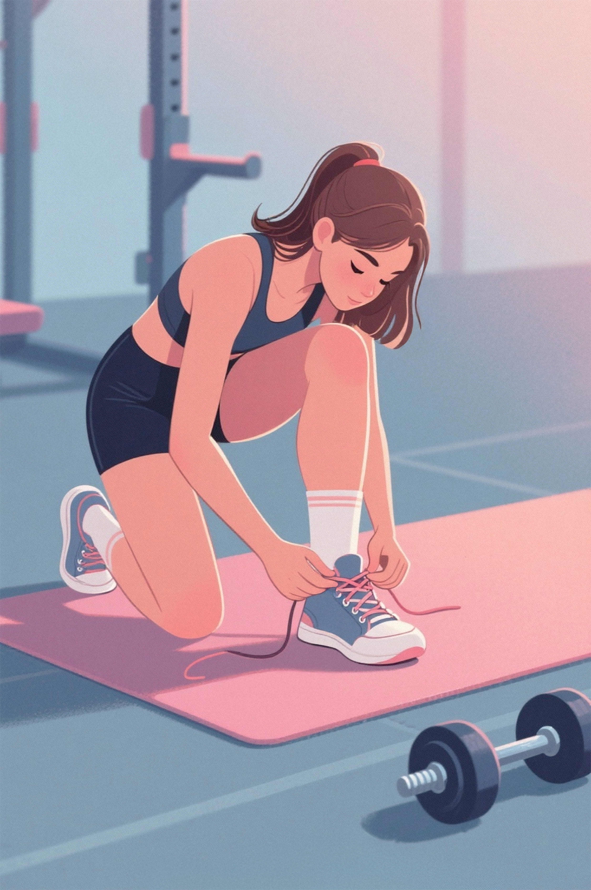
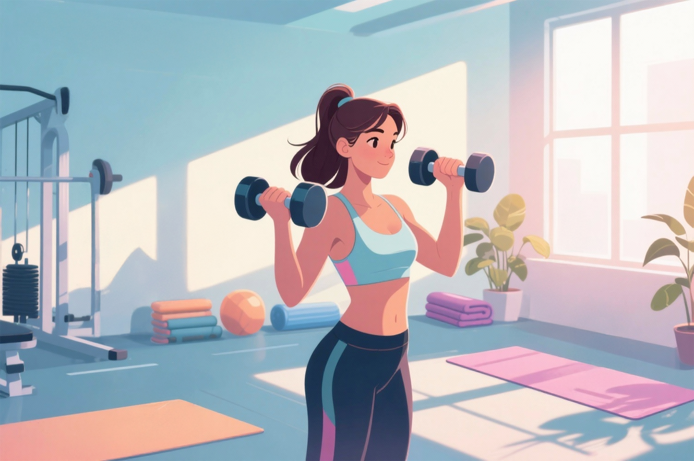
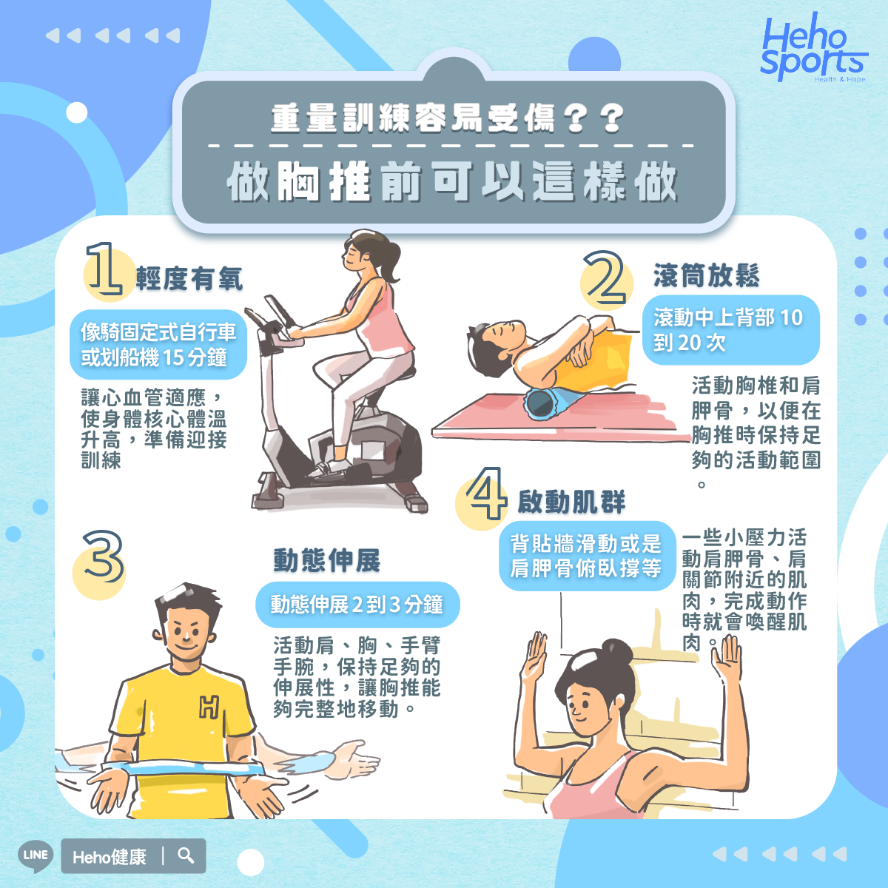
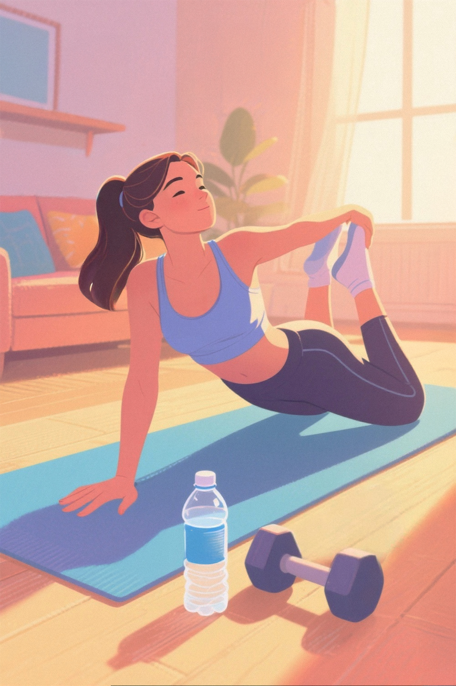
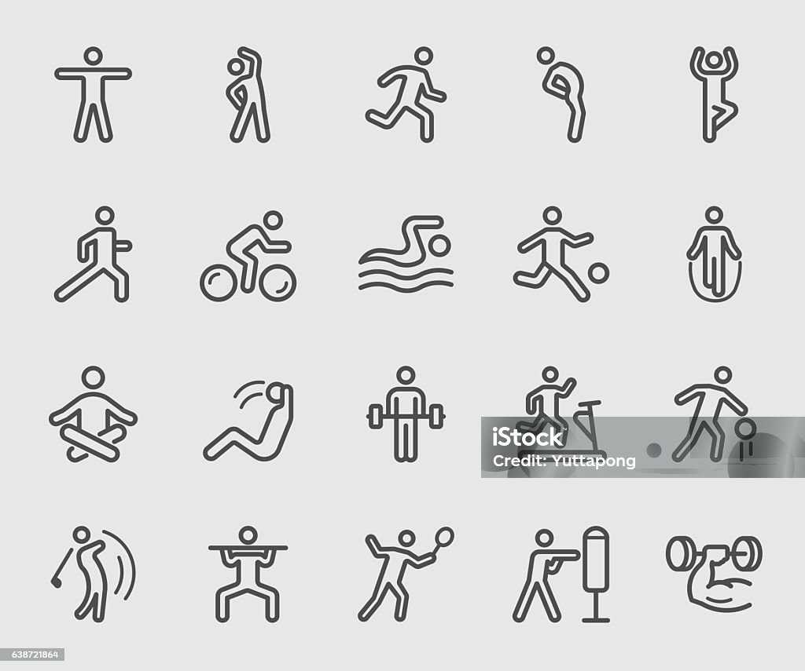

不挨餓・不花冤枉錢・從宿舍跨向健身房的第 1 步！

運動不只是練肌肉，更是提升生活品質與大腦專注力的高投報率投資！
別被上百種器材搞混，只要學會人體 4 種基礎發力，全身大肌群全包辦！

運動前不要只在跑步機上滑手機兩分鐘！針對關節與肌群做好準備，遠離肩膀痛！

別再折磨自己的膝蓋與肺活量！燃燒脂肪最有效率的區間，其實可以邊跑邊聊天！

不需要買貴桑桑的進口補品，走出校門口 7-11 / 全家就是你的營養補給站！
減脂不是自我虐待！搞懂物理守恆法則，不挨餓也能瘦得健康有型！
最好的課表不是最嚴酷的，而是能融入你大學生活、能堅持下去的那一套！

不需要完美的課表，今天跨出宿舍的第一小步，就贏過躺在床上滑手機的昨天！